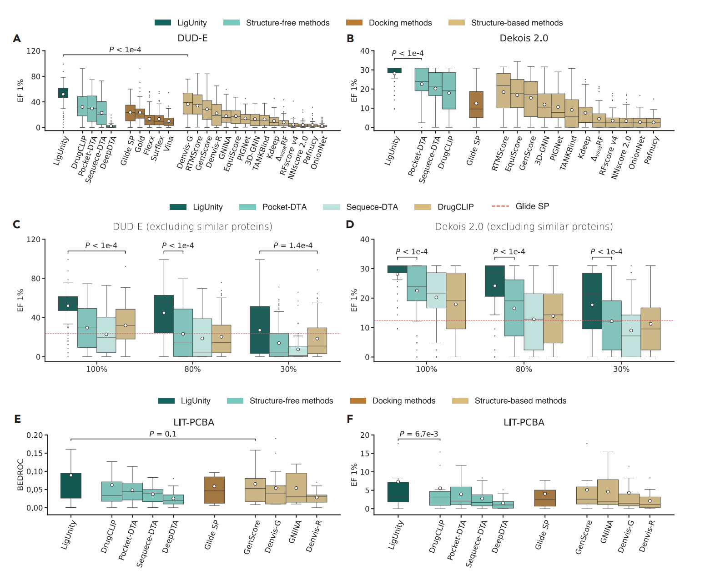
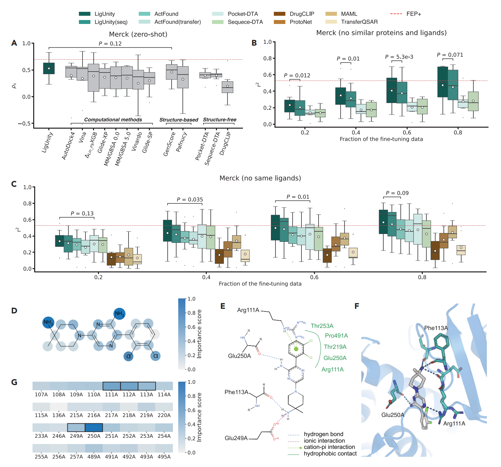

How LigUnity Works
LigUnity's core innovation is its hierarchical approach to learning a shared pocket-ligand embedding space. This allows it to understand both global structure-activity relationships and subtle, affinity-determining chemical features. The entire pipeline is illustrated below.

- 1. Data Curation (PocketAffDB): We created PocketAffDB, a structure-aware binding database by integrating large-scale affinity data from ChEMBL and BindingDB with 3D structures from the PDB. It contains 0.8 million affinity data points, 0.5 million unique ligands, and over 53,000 protein pockets.
-
2. Hierarchical Pre-training: LigUnity is pre-trained to learn a shared embedding space where the cosine similarity between a pocket vector and a ligand vector correlates with binding affinity. This is achieved via two complementary objectives:
- Scaffold Discrimination (Coarse-Grained): Using contrastive learning, the model learns to distinguish active from inactive compounds by pulling embeddings of known binding pairs closer together.
- Pharmacophore Ranking (Fine-Grained): Using a listwise ranking loss, the model learns to order a series of active ligands according to their measured binding affinity for a given pocket.
-
3. Task-Specific Inference: For downstream tasks, the model is adapted:
- Virtual Screening: A Heterogeneous Graph Neural Network (H-GNN) refines the query pocket's embedding by aggregating information from similar pockets and their known binders, enabling rapid and accurate screening.
- Hit-to-Lead Optimization: The model directly ranks candidate molecules based on embedding similarity and can be fine-tuned with a few experimental data points to achieve accuracy comparable to costly physics-based methods.
Results
• Virtual Screening
On the DUD-E, Dekois 2.0, and LIT-PCBA benchmarks, LigUnity consistently and significantly outperforms 24 competing methods, including docking programs and other ML models. It achieves over a 50% improvement in Enrichment Factor (EF 1%) compared to the next-best structure-based methods and shows strong generalization to novel protein targets.
• Hit-to-Lead Optimization
On two FEP benchmarks (Merck and JACS), LigUnity shows state-of-the-art performance in predicting binding free energies. When fine-tuned on just a few data points, LigUnity's accuracy becomes comparable to FEP+, a computationally intensive industry standard, positioning it as a powerful, cost-effective alternative. Importance scores calculated by the model also correctly identify key atoms and residues responsible for binding.
BibTeX
@article{Feng2025LigUnity,
title = {Hierarchical affinity landscape navigation through learning a shared pocket-ligand space},
author = {Feng, Bin and Liu, Zijing and Li, Hao and Yang, Mingjun and Zou, Junjie and Cao, He and Li, Yu and Zhang, Lei and Wang, Sheng},
journal = {Patterns},
volume = {6},
pages = {101371},
year = {2025},
publisher = {Elsevier},
doi = {10.1016/j.patter.2025.101371}
}